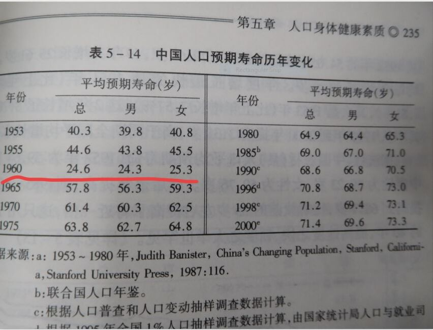
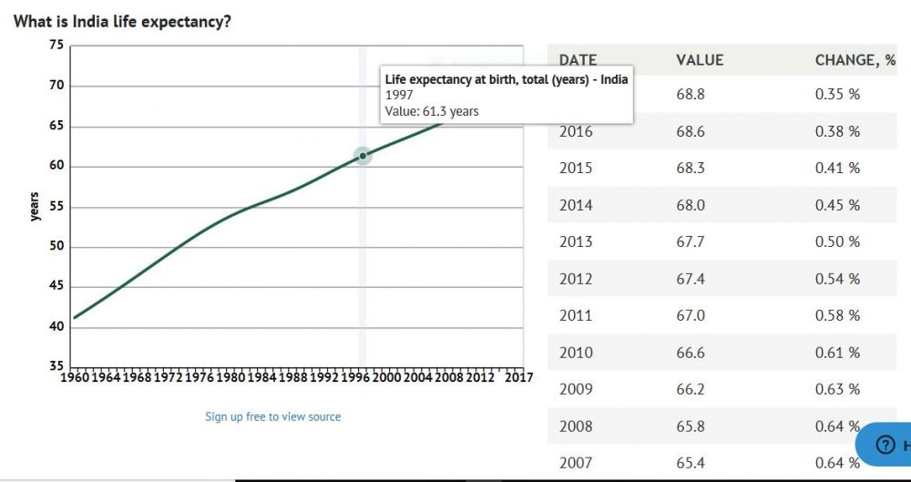
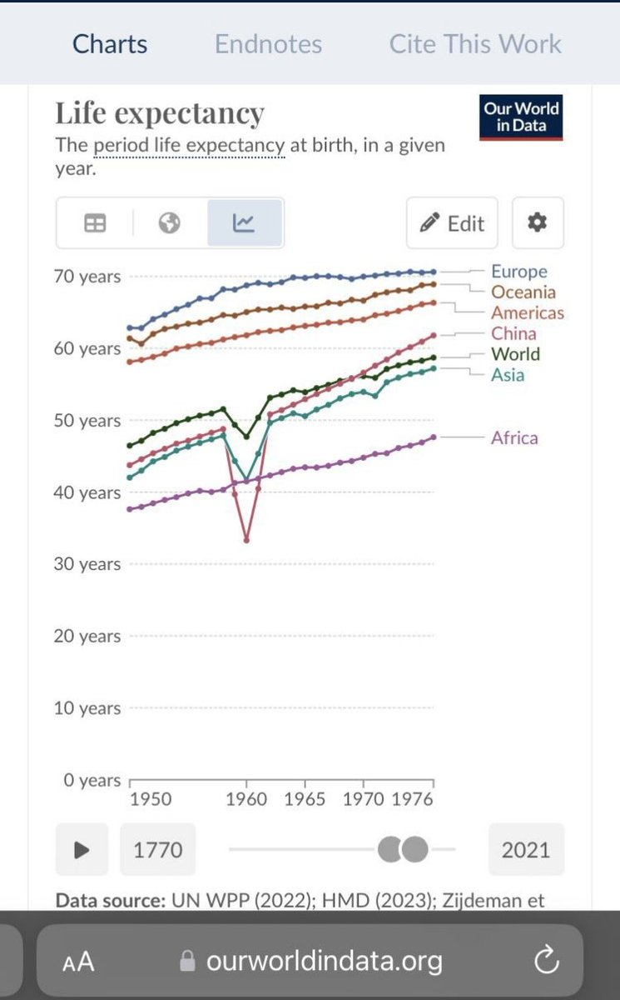

@Line_XII 🤭🤭🤭





社会党能不能把印度人的生活水平提升到北欧人的一半我不知道，但共产党快把中国人的预期寿命缩短到印度人的一半了🤣
1960年，各国人口预期寿命，中国为24.6岁(出自《新中国人口五十年》，印度是41.2岁且一直平稳增长)
甚至连腊左粉红喜欢黑的“民国30年代人均预期寿命35岁”，在这大吃饱面前都相形见绌 https://t.co/HnDkkvDeEF https://t.co/E5BkkmctgJ
1960年，各国人口预期寿命，中国为24.6岁(出自《新中国人口五十年》，印度是41.2岁且一直平稳增长)
甚至连腊左粉红喜欢黑的“民国30年代人均预期寿命35岁”，在这大吃饱面前都相形见绌 https://t.co/HnDkkvDeEF https://t.co/E5BkkmctgJ
能说出毛时代中国不如黑非洲的古墓自由派也是神人了，但凡比较一下钢产量、发电量、公铁路里程就知道根本没得比，再比一下人均寿命和受教育水平，相比之下都比比较GDP靠谱的多。 https://t.co/WYOBRh52qr